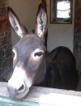

“M'mèe, pourtchi qu'tu n'nos as pon fait à connaître Papa Noué?”
Ch'tait la vouaix à Louothains, man fréthe aîné, âgi d'chînq ans. Quand nou lî muchait tchique chose, il en 'tait tout r'nièrchi. En dézembre 1946, not' maîsonnée vivait tout encafotée, sans vaîsîns ni vîsites. La Provînce Française, maugré les jouaies d'la Libéthâtion, s'èrfaîthait ma des maûfaits d'la Dgèrre.
Ma méthe explyitchi à Louothains qué Papa Noué 'tait piéthe qu'un bieau gros rein entre deux pliats: un chinnepé. Qu'i' n'fallait pon forvier l's êfants ni les nouôrri auve des faithe-accraithe.
À propos d'fricot, chutte sèrvelle dé Noué, i' n'tait pon tchestchion d'mangi la dèrniéthe pîntarde. Un bonheu qu'i' restait tchiques morcieaux d'fronmage dé biche, tchi nos avait souôt'nu duthant la Dgèrre et continnuait d'même. D'vant l'fouoyi, i' n'y'avait pon d'présents et j'étchions bein liain d'înmaginner qu'i' piêsse y'en aver.
Pus tard dans la séthée, j'fus rêvilyie par la vouaix d'ma méthe tchi dithait: “Ch'est l'heuthe! Dêhale-té!”

I' faîthait eune fraid d'tchian quand j'crouaîsînmes lé bel. Dans l'êtabl'ye, un bourricot, quâsi blianc dans sa touaîson d'hivé, sé l'vit dès qu'i' nos vit. Ses chabots capuchaient les pavés et ses longues ouothelles s'attentionnaient bein à chein qu'not' M'mèe dithait:
“L's êfants, sav'-ous qu'aniet, à mînniet, l's annimaux pâlent? Êcoutez don chein qu'Basilic s'en va dithe!”
Aussitôt, l'âne dêgagit ses longues jaunes dents, châtchit ses babinnes, poussit un ri formidabl'ye éyou qu'i' y'avait quâsiment des buts d'mots... J'étchions tout êbézouis. L'galimatchias d'ma M'mèe fut l'pus bieau présent qu'j'aie janmais r'chu!
Mariane De Bondy
Viyiz étout: